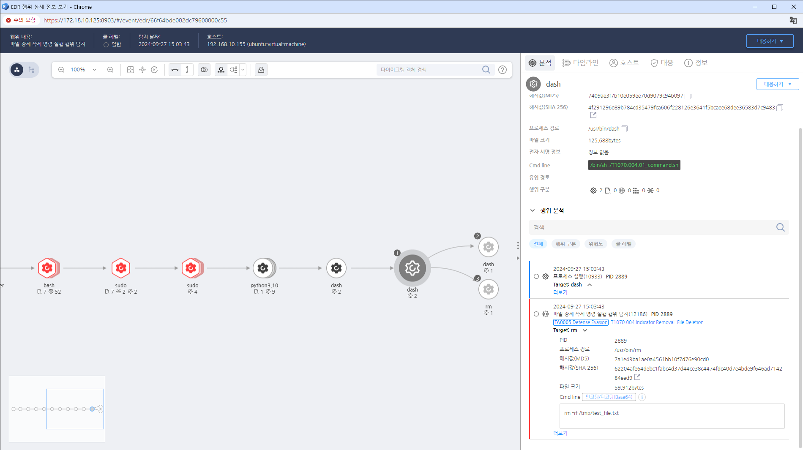

MITRE ATT&CK 액션을 기준으로 대응 방안을 작성
rm -rf 명령을 통해 파일을 강제 삭제하는 행위를 탐지한다.
 https://172.18.10.125:8903/#/event/edr/66f64bde002dc79600000c55
IDS/IPS를 설정하여 비정상적인 로그 삭제 활동을 실시간으로 탐지하고 알림을 발생시킵니다.
시스템 및 애플리케이션 로그를 정기적으로 분석하여 의심스러운 활동이나 삭제 패턴을 식별합니다.
로그 삭제가 발견된 경우 즉시 사고 대응 절차를 실행하여 피해를 최소화하고 상황을 관리합니다.
로그 삭제가 감지된 시스템을 즉시 격리하여 추가적인 공격이나 데이터 손실을 방지합니다.
로그 파일을 안전한 저장소에 보관하고, 쓰기 보호 및 접근 제어를 강화하여 무단 삭제를 방지합니다.
로그 파일을 정기적으로 백업하여 삭제된 로그를 복구할 수 있는 방법을 마련합니다.
로그 파일에 대한 접근 권한을 최소화하여 불필요한 사용자 또는 프로세스가 삭제하지 못하도록 합니다.
직원들에게 로그 관리 및 보안 관련 교육을 실시하여 인식을 높이고 내부 위협을 줄입니다.
로그 파일 보호
정기적인 로그 백업
로그 기록 무결성 보장
중앙 집중식 로그 관리
모니터링 및 경고 시스템 설정
정기적인 보안 감사
침입 탐지 시스템(IDS) 사용
보안 정책 수립
Action 실행시 함꼐 영향을 받는 다른 Techniqes
| ATT&CK |
|---|
| T1070.004 |
| D3FEND |
|---|
| D3-FIM File Integrity Monitoring |
| D3-SCA System Call Analysis |
| D3-PM Platform Monitoring |